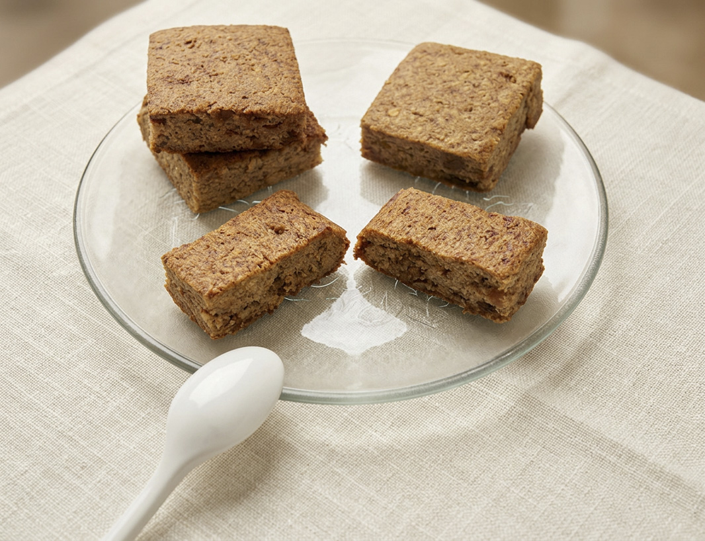

Una vez, mi familia decidió preparar cachapas para los desayunos, entonces compramos la mezcla de cachapas de harina PAN y en las mañanas me dedicaba a cocinar.
Mi madre decidió comprar la mezcla de cachapas de marca Tigo, pensé que no iba a hacer una diferencia pero sí la hizo... Fue horrible, se pegaban más que chicle en todas las sartenes y salian más quemadas que arroz olvidado.
Quería deshacerme de esa mezcla malévola que interrumpió nuestros ricos desayunos, pero mi mamá decidió utilizarla con otras cosas que había en la casa, como unos plátanos maduros y frutos secos, le agregó el polvo de hornear y la decidió cocinar como una torta.
Teniendo todas las razones para ser desechada, fue recuperada. Por eso nunca debes menospreciar lo que Dios ha decidido usar.
Al aprovechar la dulzura natural del cambur y el plátano pasado de madura se evita el uso de dicha azúcar.
La combinación de avena y plátano aporta fibra soluble e insoluble que ayudan tanto a la digestión, al colesterol y a la saciedad.
Los dos huevos aportan una buena cantidad de proteínas para la recuperación de los músculos, y los frutos secos proveen su vitamina E y ácidos bastante útiles para la salud cardiovascular, también funciona como antioxidante para el cuerpo.
Toda su variedad de ingredientes provee las energías suficientes para resistir entrenamientos y una vida universitaria fuerte atacada por el estrés y ansiedad, sin caer en la necesidad de los alimentos ultra procesados.
Todos los ingredientes son fáciles y baratos de conseguir en cualquier tienda de su preferencia, y sobre todo con la facilidad de conseguirlos lo más natural posible.